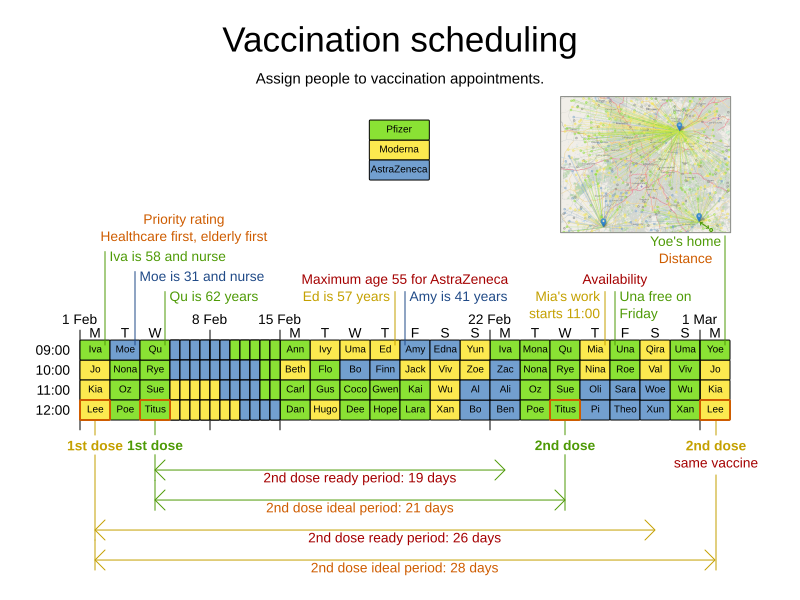
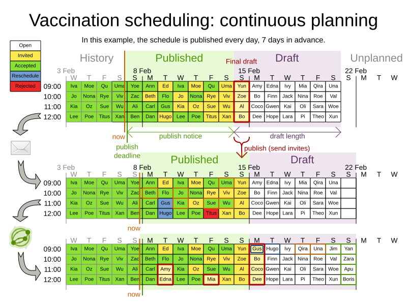

Optimizing COVID-19 vaccination appointment scheduling
COVID-19 vaccination appointment scheduling has proven to be a world-wide challenge. People eligible for vaccinations haven’t been able to secure appointments despite repeated attempts. Those scheduled for vaccinations sometimes arrive at a vaccination center only to learn that their appointment has been canceled. Others find that they share the same vaccination time window with hundreds of people and must wait in line for hours. However, this doesn’t have to be the case. You can use the OptaPlanner vaccination appointment scheduler quickstart to develop a schedule that is both efficient and fair. The vaccination appointment scheduler uses artificial intelligence (AI) to prioritize people and allocate time slots based on multiple constraints and priorities. It is part of the OptaPlanner quickstart collection, available on GitHub.
Watch the OptaPlanner vaccination appointment scheduling video or read on to learn more.
The benefits of a system-automatically-assigns appointment scheduling system
There are two main approaches to scheduling appointments. The system can either let a person choose an appointment slot (user selects) or the system assigns a slot and tells the person when and where to attend (system automatically assigns).
Here is a quick comparison of the two approaches:
User selected scheduling
This approach is similar to the approach used with concert ticket sites such as Ticketmaster™. It’s how most concert tickets are sold. People compete with each other for a fixed number of tickets or appointments.
Characteristics of this approach:
- Appointments are available on a first-come first-serve basis.
- A person chooses a preferred appointment time and location from a range of available appointments.
Challenges with this approach:
- First-come first-serve might not be fair.
- System overloads can repeatedly shut out people with slower internet.
- When many people try to reserve the same appointment slot at the same time, all but one person fails to secure the appointment which results in a poor user experience. Some people might give up trying to reserve an appointment.
On the other hand, less desirable appointment slots might not be filled. - It’s tricky to prioritize based on criteria such as priority, age, or second dose status.
- The desired vaccine type (Pfizer™, Moderna™, AstraZeneca™) might not be available.
It could be argued that the user-selects method is not the most efficient method for vaccination scheduling. People can choose the closest vaccination center but that center might not have the greatest capacity. What’s good for one person isn’t always optimal for the population as a whole. There is no way for the system to direct a person to a vaccination center that meets the needs of the individual and is at the same time efficient for the entire population because of capacity. In addition, the system can easily be overloaded.
System automatically assigned scheduling
With this push-based approach, people provide their information to the system and the system assigns an appointment.
Characteristics of this approach:
- Appointment slots are allocated based on priority.
- The system allocates the best appointment time and location based on preconfigured planning constraints.
Challenges with this approach:
- The allocated time slot might not be convenient.
- People might be more likely to reschedule.
The system-automatically-assigns method is easier for people to use, is fairer, and is more efficient for vaccination appointment scheduling than the user-selects method.
The second dose challenge
Most COVID-19 vaccines require two doses. For optimal effectiveness, the second dose must be given within a specific time frame in relation to the first dose, using the same vaccine type. On top of that, different vaccines have different second-dose time frames. And within those time frames, there is a ready date (the first date that the second dose can be taken), an ideal date (the best date to take the second dose), and an end date (the last date that the second dose is considered to be effective). For example, the ideal date for the Pfizer second dose is 21 days after the first dose but the ideal date for the Moderna second dose is 28 days after the first dose.
So let’s say that you start vaccinating people with the Moderna vaccine. After four weeks, you are still giving people the first dose, but now it’s time for people who already received their first dose to get their second dose. You have to decide whether to give an appointment to the person who needs the second dose or to give an appointment to someone for a first dose. That might seem like a no-brainer, but this scenario has potential complications. Let’s say that in the first week of vaccinations, you vaccinated people with a high priority but you also vaccinated other people as well because you found you had extra vaccines at the end of a day and you didn’t want to waste them. Now, four weeks later, you must choose whether to give an appointment to a first-dose high-priority person or give it to the lower-priority person that needs second dose.
One solution is to equally share appointments between people receiving first and second doses, but doing this might create a backlog of people needing a second dose. If you keep giving the first dose without prioritizing people that need the second dose, eventually the backlog of people that need the second dose will snowball. The second dose vaccination date will move very far away from the ideal date and might exceed the due date which will make the first vaccination much less effective.
Therefore, prioritize second-dose appointments over first-dose appointments regardless of the first-dose person’s priority rating.
Solving the vaccination appointment scheduling problem
The OptaPlanner vaccination appointment scheduler uses the system-automatically-assigns method to solve the problem of vaccinating as many people as possible by using planning constraints to create a score for each person. The person’s score determines when they get an appointment. The higher the person’s score, the better chance they have of receiving an earlier appointment. Constraints are either hard, medium, or soft:
- Hard constraints cannot be broken. If any hard constraint is broken, the plan is unfeasible and cannot be executed:
- Capacity: Do not over-book vaccine capacity at any time at any location.
- Vaccine max age: If a vaccine has a maximum age, do not administer it to people who at the time of the first dose vaccination are older than the vaccine maximum age. Ensure people are given a vaccine type appropriate for their age. For example, don’t assign a 75 year old person an appointment for a vaccine that has a maximum age restriction of 65 years.
- Required vaccine type: Use the required vaccine type. For example, the second dose of a vaccine must be the same vaccine type as the first dose.
- Ready date: Administer the vaccine on or after the specified date. For example, if a person receives a second dose, do not administer it before the recommended earliest possible vaccination date for the specific vaccine type (such as 26 days after the first dose).
- Due date: Administer the vaccine on or before the specified date. For example, if a person receives a second dose, administer it before the recommended vaccination final due date for the specific vaccine (such as three months after the first dose).
- Restrict maximum travel distance: Assign each person to one of a group of vaccination centers nearest to them. This is typically one of three centers. This restriction is calculated by travel time, not distance, so a person that lives in an urban area usually has a lower maximum distance to travel than a rural person.
- Medium constraints decide who doesn’t get an appointment when there’s not enough capacity to assign appointments to everyone. This is called over-constrained planning:
- Schedule second dose vaccinations: Do not leave any second dose vaccination appointments unassigned unless the ideal date falls outside of the planning window.
- Schedule people based on their priority rating: Each person has a priority rating. This is typically their age but it can be much higher if they are, for example, a healthcare worker. Leave only people with the lowest priority ratings unassigned. They will be picked up in the next run. This constraint is softer than the previous constraint because the second dose is always prioritized over priority rating.
- Soft constraints should not be broken:
- Preferred vaccination center: If a person has a preferred vaccination center, give them an appointment at that center.
- Distance: Minimize the distance that a person must travel to their assigned vaccination center.
- Ideal date: Administer the vaccine on or as close to the specified date as possible. For example, if a person receives a second dose, administer it on the ideal date for the specific vaccine (such as 28 days after the first dose). This constraint is softer than the distance constraint to avoid sending people half-way across the country just to be one day closer to their ideal date.
- Priority rating: Schedule people with a higher priority rating earlier in the planning window. This constraint is softer than the distance constraint to avoid sending people half-way across the country. This constraint is also softer than the ideal date constraint because the second dose is prioritized over priority rating.
Hard constraints are weighted against other hard constraints. Soft constraints are weighted against other soft constraints. However, hard constraints always outweigh medium and soft constraints regardless of their respective weights.
Because you have more people than you have appointment slots, you need to make tough decisions. Second dose appointments are always assigned first to avoid creating a backlog that would overwhelm you later. After that, people are assigned based on their priority rating. Everyone starts with a priority rating that is their age. Doing this prioritizes older people over younger people. After that, people that are in specific priority groups receive a few hundred extra points. This varies based on the priority of their group. For example, nurses might receive an extra 1000 points. This way, older nurses are prioritized over younger nurses and young nurses are prioritized over people who are not nurses. The following table illustrates this concept:
The solver
At the core of OptaPlanner is the solver, the engine that takes the problem data set and overlays the planning constraints and configurations. The problem data set includes all of the information about the people, the vaccines, and the vaccination centers. The solver works through the various combinations of data and eventually determines an optimized appointment schedule with people assigned to vaccination appointments at a specific center. The following illustration shows a schedule that the solver created:

Continuous planning
Continuous planning is the technique of managing one or more upcoming planning periods at the same time and repeating that process monthly, weekly, daily, hourly, or even more frequently. The planning window advances incrementally by a specified interval. The following illustration shows a two week planning window that is updated daily:

The two week planning window is divided in half. The first week is in the published state and the second week is in the draft state. People are assigned to appointments in both the published and draft parts of the planning window. However, only people in the published part of the planning window are notified of their appointments. The other appointments can still change easily in the next run. Doing this prevents the schedule from painting itself in a corner. For example, if a person who needs a second dose has a ready date of Monday and an ideal date of Wednesday, you don’t have to invite them for Monday if-and-only-if you can prove you can give them a draft appointment later in the week.
You can determine the size of the planning window but just be mindful of the size of the problem space. The problem space is all of the various components that go into creating the schedule. So, the more days you plan ahead the larger the problem space.
Pinned planning entities
If you are continuously planning on a daily basis, there will be appointments within the two week period that are already allocated to people. To ensure that appointments are not double-booked, you need to mark existing appointments as allocated by pinning them. Pinning is used to anchor one or more specific assignments and force OptaPlanner to schedule around those fixed assignments. A pinned planning entity, such as an appointment, doesn’t change during solving.
Whether an entity is pinned or not is determined by the appointment state. If you take a look at the previous image, you can see to the left of the image that an appointment can have five states : Open, Invited, Accepted, Rejected, or Rescheduled.
| Age | Job | Priority rating |
|---|---|---|
60 | nurse | 1060 |
33 | nurse | 1033 |
71 | retired | 71 |
52 | office worker | 52 |
Note | You don’t actually see these states directly in the quickstart demo code because the OptaPlanner engine is only interested in whether the appointment is pinned or not. |
So as you can see from the image, you need to be able to plan around appointments that have already been scheduled. An appointment with the Invited or Accepted state is pinned. Appointments with the Open, Reschedule, and Rejected state are not pinned and are available for scheduling.
In this example, when the solver runs it searches across the entire two week planning window in both the published and draft ranges. The solver considers any unpinned entities (appointments with the Open, Reschedule, or Rejected states) in addition to the unscheduled input data, to find the optimal solution. If the solver is run daily, you will see a new day added to the schedule before you run the solver, as shown in the middle image above. The third schedule shows the results of the solver.
Notice that the appointments on the new day have been assigned and Amy and Edna who were previously scheduled in the draft part of the planning window are now scheduled in the published part of the window. This was possible because Gus and Hugo requested a reschedule. This won’t cause any confusion because Amy and Edna were never notified about their draft dates. Now, because they have appointments in the published section of the planning window, they will be notified and asked to accept or reject their appointments, and their appointments are now pinned.
Stay tuned. We’ll be posting a follow-up blog for a deeper, more technical look at the Optaplanner vaccination appointment scheduler quickstart.
Co-authored by Emily Murphy.